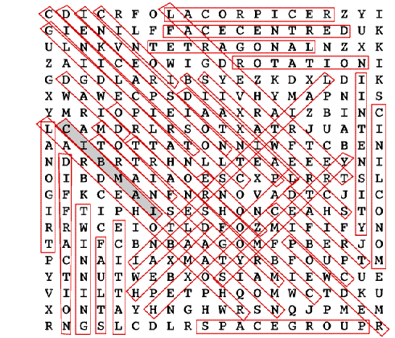

Competition answers in here:
The winner was Ann Chippindale, Chemical Crystallography, Oxford, won the Limerick Competition in the last issue and has been awarded the £10 book token. Here are her two entries:
An X-ray Scatterer from Cheam,
Grew crystals that went off in the beam,
"Curse it", he said,
"I'll use neutrons instead",
And the experiment worked like a dream
A young crystallographer from Hong Kong
Got his Spacegroup completely wrong
He ran out of luck
When the refinement got stuck
With bond distances too short and too long
Crystallographic word square
I was afraid that this competition was too difficult because I had not given you the list of words, but there was an enthusiastic response. The winner was Steve Spratt from Johnson Matthey who has been sent the prize book token.

The 35 crystallographic words were:
biaxial, close packed, cubic, diad, diffraction, face centred, faults,
glide plane, hexad, hexagonal, intensity, interstitial, inversion, ionic,
lattice, monoclinic, motif, orthorhombic, pentad, powder, reciprocal,
rhombohedral, rotation, screw axis, space group, symmetry, tetragonal,
tetrahedral, transform, translation, triad, triclinic, trigonal, twinning,
zone.
The tie-breaker word was 'IAMBIC' shown shaded in the diagram. It describes a form of poetry where verses end in two syllables, a short one followed by a long one, or an unstressed one followed by a stressed one.
Some people found two occurences of a word I had not thought of 'line'.
You may like to look for these too.
SECTION 1: HISTORY
1. Who won the Battle of Stirling Bridge in 1297? Scotland
2. Who won the Battle of Bannock Burn in 1314? Scotland
3. Who won the Battle of Flodden in 1513? England
4. Who won the Battle of Culloden in 1746? England
5. Who won the Calcutta Cup in the 1990 Five Nations to achieve the Grand Slam? Scotland
6. In what year was the first Scottish Parliament? 1326
7. In what year were the crowns of Scotland and England united? 1603
8. In what year were the parliaments of Scotland and England united? 1707
SECTION 2: UISGE BEATHA (Water of life)
1. Which distillery is the most northerly? Highland Park
2. Which island has the most number of distilleries? Islay
3. Which distillery is the highest above sea level? Dalwhinnie
4. Which distillery is the most northerly on the mainland? Pulteney
5. Which was the first distillery to obtain a Royal Warrant? Royal Brackla
6. Which is the only distillery on Skye? Talisker
7. Which was the first distillery to "go legal"? Glenivet
8. Which loch has often been said to have been made of whisky? Campbeltown
SECTION 3: GEOGRAPHY
1. Which is the second highest mountain in Scotland? Ben Macdui
2. What is the name given to mountains between 2500ft and 3000ft? Corbetts
3. On which island is John Smith buried? Iona
4. What is the most northerly habitation in Scotland? Wick of Skaw
5. What is the most northerly point of Scotland and the British Isles? Out Stack
6. Which island was used to test biological warfare in the second world war?
Grinard Island
7. Which island has the largest area? Lewis and Harris
8. What is the name of Scotland's only lake? Menteith
SECTION 4: MISCELLANEOUS
1. Which woods are reputed to have walked? Birnam
2. Where do "local heroes" call from? Pennan
3. Which castle links Macbeth to the Queen Mother? Glamis
4. Where is Hamish Macbeth's beat? Plockton
5. Where did Dr. Finlay live? Auchtermuchty
6. What is the name of Britain's only charted whirlpool? Corry Vreckan
7. Where was the discoverer of chloroform's anaesthetic properties born? Bathgate
8. Which island has "whisky galore"? Eriskay
AND FINALLY ... (the correct answer to this was not required to win the prize)
Which of the following delicacies would you not be surprised to find in a Scottish chip shop? a) deep fried mars bar b) deep fried jaffa cake
c) deep fried snickers bar d) deep fried pizza
TRICK QUESTION. They can all be bought in a Scottish chip shop.
All of these diagrams have been printed in Crystallography News in the last 5 years, Click here to see the diagrams in their more usual size and orientation and in which issue they were printed. A few of the more popular logos are in most issues, so they do not have a page and issue number to identify them.
 Click here to return to BCA homepage
Click here to return to BCA homepage
{kind=link}